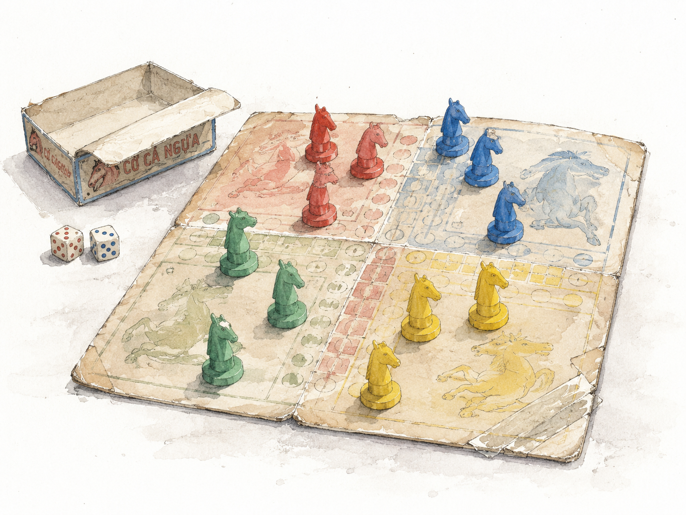
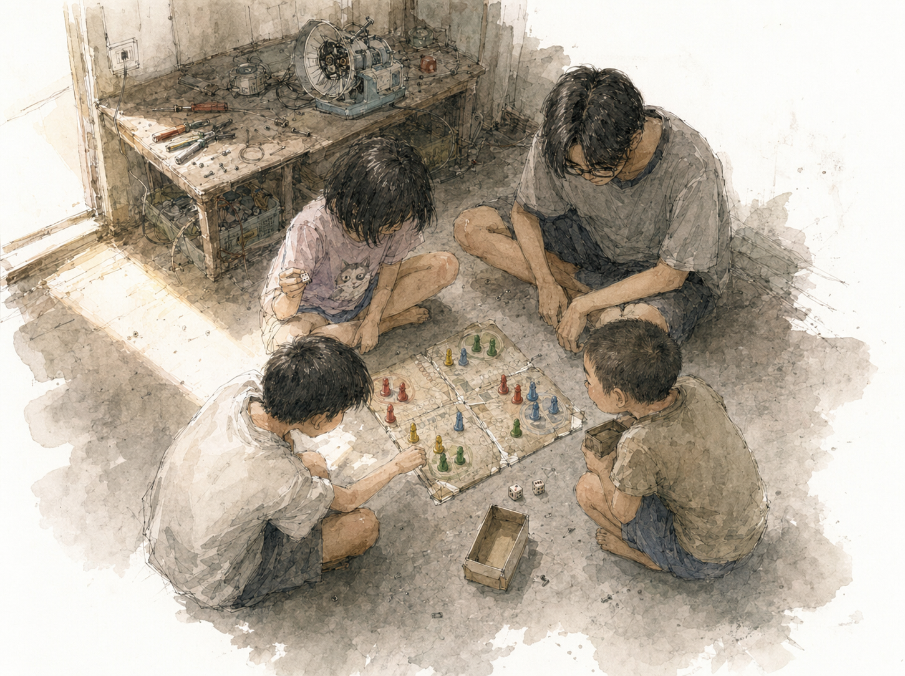

Bữa đó ba đứa tớ đang ngồi bệt trong nhà anh Môn, lúi húi với một cái quạt bàn hỏng.
Nói “lúi húi” là nói cho sang. Thật ra anh Môn đang tháo cái quạt, còn tớ với con Huyền ngồi hai bên, mỗi đứa cầm một cái tua vít, chờ được sai. Con Huyền thì không chờ — nó cứ vặn bừa mấy con ốc gần nó nhất, anh nó phải chốc chốc lại gạt tay ra.
“Để yên coi.”
“Em vặn phụ.”
“Vặn cái con khỉ. Đưa tao cái kìm.”
Đại khái vậy. Cả buổi chiều của tụi tớ hồi đó là như vậy đó cậu, chẳng có gì đâu.
Rồi ngoài cửa có tiếng.
“Chị Huyền ơi! Chị Huyền ơi!”
Giọng con nít, cao, gấp gáp, gọi liền tù tì hai lần không kịp thở.
Rồi một thằng nhỏ ton ton chạy vô. Nhỏ xíu — tớ đoán nó kém tớ hai lớp. Mặt tròn, tóc húi cua, cười toe toét từ ngoài sân cười vô. Nó ôm khư khư trước ngực một cái hộp giấy, ôm bằng cả hai tay, ôm kiểu người ta ôm đồ quý.
Nó chạy thẳng tới con Huyền. Không nhìn tớ lấy một cái.
“Chị Huyền, có bạn mới hả? Bốn người nè!”
Rồi nó đặt cái hộp xuống đất.
Cái hộp đó, tớ nhớ hoài.
Bìa giấy đã mềm nhũn, bốn góc mòn hết. Có góc rách toạc, dán lại bằng băng keo giấy — dán chồng lên nhau mấy lớp, lớp cũ ố vàng, lớp mới còn trắng. Cái bàn cờ mở ra thì xỉn màu, mấy ô phai gần hết, chỗ gấp trắng ra thành đường nứt, một mảnh giấy dán đè lên chỗ thủng.
Rồi nó mở cái hộp nhỏ bên trong.
Mười sáu con cá ngựa. Bốn màu, mỗi màu bốn con.
Mà con nào cũng thương tích.

Có con sứt một mảng ở lưng, nhựa vỡ để lộ chỗ trắng bên trong. Có con cụt hẳn cái bờm — chỗ đó giờ nhẵn thín, mòn tròn, chắc đã bị mài đi bằng tay. Có con gãy cổ, được dán lại, chỗ keo khô đùn ra thành một cái ngấn xám vòng quanh, nhìn như đeo vòng.
Nhưng cậu biết cái gì còn nguyên không?
Màu. Màu mấy con ngựa vẫn tươi rói, không phai, không xỉn. Và con nào cũng còn đứng được. Nó đặt từng con lên bàn cờ, con nào cũng đứng thẳng, không con nào ngã.
Sau này tớ mới hiểu: nó lau. Nó lau đều đặn, lau nhiều tới mức mấy con ngựa què vẫn còn óng.
Con Huyền là đứa lên tiếng trước.
“Ơ.” Nó nhặt con ngựa cụt bờm lên, xoay xoay. “Sao tao tưởng mày quý bộ này lắm mà. Sao giờ nhìn teng beng vậy? Chán rồi hả?”
Thằng Cò đang cười. Nó nín.
Cậu biết cái kiểu nín đó không — không phải nín vì hờn, mà nín vì cái mặt nó chưa kịp đổi. Miệng vẫn còn đang cười dở, mà mắt thì đã đi đâu mất rồi.
“Dạ không.” Nó nói nhỏ. “Bữa ba em nhậu. Về quậy quá. Mà bộ cờ em để ngay dưới kệ, tay ổng quơ quào... nên ra nông nỗi này.”
Nó nói xong thì cúi xuống, lấy tay dựng lại mấy con ngựa cho ngay hàng. Mấy con vốn đã ngay rồi.
Không đứa nào nói gì hết.
Tớ thì mới tới, tớ không biết nói gì. Anh Môn thì ngồi im, mắt vẫn để trên cái quạt, mà tay anh thì dừng lại rồi.
Con Huyền cầm con ngựa cụt bờm lên lần nữa.
Nó ngắm. Ngắm hồi lâu.
Rồi nó đặt xuống bàn cờ, đánh cạch một cái.
“Ê.” Nó ngước lên nhìn thằng Cò. “Tao thấy vậy mà đặc biệt nha. Cả thế giới không có bộ thứ hai đâu.”
Nó nói xong thì bốc xúc xắc lên đổ luôn, không chờ ai.
Cậu để ý cách nó nói chưa. Nó không nói “tội mày”. Nó không hỏi ba mày sao vậy. Nó không an ủi một chữ nào hết.
Nó chỉ tuyên bố một sự thật mới, rồi đổ xúc xắc.
Thằng Cò ngồi đực ra một lúc.
Rồi nó cười. Cười toe cả cái mặt.
“Chị Huyền đi trước là ăn gian đó nha!”
Mà khoan — bốn người là bốn ai?
Thằng Cò đếm sai. Đứng đó chỉ có tớ, con Huyền, với nó. Ba.
Tớ thấy nó liếc lên anh Môn một cái. Rồi liếc xuống. Rồi liếc lên. Không dám nói.
Con Huyền thì không có cái bệnh đó.
“Anh Môn. Chơi.”
“Tao đang sửa quạt.”
“Chơi đi.”
“Sửa quạt.”
Con Huyền ngồi im hai giây. Rồi nó với tay, cầm luôn cái tua vít trong tay anh nó, đặt xuống đất.
Anh Môn nhìn cái tua vít. Nhìn con em. Nhìn thằng Cò đang ngồi xổm ôm gối, mắt tròn xoe.
Rồi anh hất tóc một cái, thở ra một hơi rõ dài, rồi ngồi bệt xuống sàn.
“Tao lấy màu xanh.”
Thằng Cò cười rách miệng.

Chiều đó bốn đứa chơi tới lúc trời nhá nhem.
Con Huyền chơi như đi đánh trận — nó đá con tớ hai lần liên tiếp, đá xong không nói gì, chỉ nhấc con ngựa của tớ ra đặt về chuồng, gọn ơ, kiểu người ta dọn rác. Tớ kêu lên. Nó ngước lên, mép nhếch một bên.
“Luật mà.”
Anh Môn thì chơi kiểu người lớn chơi với con nít — đi cho có, đổ xúc xắc xong nhiều khi quên tới lượt mình, phải để tụi tớ nhắc. Có lần anh còn đi lộn hướng, thằng Cò phải rướn người qua sửa giùm. Nhưng anh không bỏ giữa chừng. Anh ngồi đó hết ván. Rồi hết ván nữa. Rồi hết ván nữa.
Thằng Cò thì thua liên tục, mà thua xong nó cười. Con nó bị đá, nó cười. Về chuồng chót, nó cười. Nó cứ ngồi đó, ôm cái hộp xúc xắc trong lòng, mắt chạy theo từng nước đi của người khác.
Nó không chơi để thắng. Nó chơi để có đủ bốn người.
Cả buổi nó chỉ cãi đúng một lần — lúc con Huyền tính nhấc con ngựa gãy cổ của nó ra khỏi bàn.
“Ê ê ê! Nhẹ tay!”
“Tao đá con mày mà.”
“Thì đá nhẹ thôi!”
Con Huyền nhìn nó. Rồi nó nhấc con ngựa đó lên bằng hai ngón tay, nhẹ hều, đặt về chuồng như đặt trứng.
Rồi nó đổ xúc xắc tiếp, mặt tỉnh bơ.
Chiều đó tan, thằng Cò xếp mười sáu con cá ngựa lại. Xếp từng con một, thẳng hàng, đúng màu, không con nào nằm ngang. Rồi nó lấy vạt áo lau qua từng con.
Con nào cũng lau. Kể cả con chưa ai đụng tới.
Rồi nó ôm cái hộp trước ngực, ton ton chạy về.
Sau này tớ chơi cá ngựa không biết bao nhiêu ván. Bộ mới, bàn cờ láng cóng, xúc xắc trong veo, mười sáu con ngựa con nào cũng đủ bờm đủ cổ.
Chẳng bộ nào bằng cái bộ nát tươm đó.